Last updated: 2026-08-12
Checks: 7 0
Knit directory: ihc_method/
This reproducible R Markdown analysis was created with workflowr (version 1.7.2). The Checks tab describes the reproducibility checks that were applied when the results were created. The Past versions tab lists the development history.
Great! Since the R Markdown file has been committed to the Git repository, you know the exact version of the code that produced these results.
Great job! The global environment was empty. Objects defined in the global environment can affect the analysis in your R Markdown file in unknown ways. For reproduciblity it’s best to always run the code in an empty environment.
The command set.seed(20260630) was run prior to running
the code in the R Markdown file. Setting a seed ensures that any results
that rely on randomness, e.g. subsampling or permutations, are
reproducible.
Great job! Recording the operating system, R version, and package versions is critical for reproducibility.
Nice! There were no cached chunks for this analysis, so you can be confident that you successfully produced the results during this run.
Great job! Using relative paths to the files within your workflowr project makes it easier to run your code on other machines.
Great! You are using Git for version control. Tracking code development and connecting the code version to the results is critical for reproducibility.
The results in this page were generated with repository version 9b19461. See the Past versions tab to see a history of the changes made to the R Markdown and HTML files.
Note that you need to be careful to ensure that all relevant files for
the analysis have been committed to Git prior to generating the results
(you can use wflow_publish or
wflow_git_commit). workflowr only checks the R Markdown
file, but you know if there are other scripts or data files that it
depends on. Below is the status of the Git repository when the results
were generated:
Ignored files:
Ignored: .RData
Ignored: .Rhistory
Ignored: .Rproj.user/
Ignored: data/
Ignored: output/figures/
Ignored: renv/library/
Ignored: renv/staging/
Unstaged changes:
Modified: .gitignore
Note that any generated files, e.g. HTML, png, CSS, etc., are not included in this status report because it is ok for generated content to have uncommitted changes.
These are the previous versions of the repository in which changes were
made to the R Markdown (analysis/clinical_flowpath.Rmd) and
HTML (docs/clinical_flowpath.html) files. If you’ve
configured a remote Git repository (see ?wflow_git_remote),
click on the hyperlinks in the table below to view the files as they
were in that past version.
| File | Version | Author | Date | Message |
|---|---|---|---|---|
| Rmd | 1aa35a2 | bolt3x | 2026-08-12 | :art: separate the lineage colours, colour 5(c) hot/cold, drop three blocks |
| Rmd | 1f3d09d | bolt3x | 2026-08-12 | :recycle: drop the mirage arm, fix the fig.path warning, retune the margin bands |
| Rmd | 360ee92 | bolt3x | 2026-08-12 | :recycle: reorganise the workflowr site into four ordered parts |
Membership is decided geometrically, from the pathologist’s own polygons — and in this export, from the polygon belonging to the same region as the cell file it scores.
Phenotypes here are FlowPath’s, from the QuPath gate tree. A companion page ran the identical analysis on cells MIRAGE phenotyped itself — same slides, same polygons, so the two differed by the phenotyping method alone — but it is withdrawn for now and FlowPath is the only phenotyping on the site.
Every value below is derived from three inputs:
ihc_data — single cells from the all-slide export,
data/all_slide/csv/<patient>/<patient>_<A|B|C>.csv:
one csv per annotation region, each covering the whole
slide. ihc_data is the de-duplicated union of a patient’s
region files (one row per physical cell), so cohort-level fractions are
not computed over an inflated denominator. Carries
phenotype, per-marker sign columns, centroids and
patient_id.neoplastic_data — the pathologist’s
neoplastic-cellularity percentage, one row per scored
region (ANNOTATION_1..3, or
whole_slide for a patient with no annotation drawn). Long
rather than wide, because a whole-slide score cannot be put in an
ANNOTATION_k column without claiming a region that was
never drawn.clinical_data — the clinical CRF
(HOT score, Immuno-phenotype, blood counts,
RESPONSE, OS/PFS).Membership (which cells count as “inside the tumour annotation”):
PER REGION (patient HAS an annotation directory):
cell is INSIDE = its centroid falls in THAT REGION'S polygon (sf point-in-polygon),
centroids mapped to the geojson pixel frame by
x_px = centroid_x / 0.325 (0.325 microns/pixel)
union = inside the dissolved union of the patient's polygons, scored on
the DE-DUPLICATED slide so a cell in two regions counts once
WHOLE SLIDE (patient has NO annotation directory):
every cell is INSIDE — the layout's own convention, not a fallback guessThe source column on every row records which applied
(sf or whole_slide). Region A is
ANNOTATION_1, B is ANNOTATION_2
and so on by alphabet position, so the regions line up
with neoplastic_data’s ANNOTATION_1..3
columns.
Because a polygon is read, area_mm2 and every
dens_*_per_mm2 column carry real values — except for a
whole-slide patient, which has no polygon and therefore no area.
# "all_slide" reads BOTH its cells and its polygons — they are paired region by
# region, so an externally supplied annotation set would not line up, and passing one
# is an error rather than being silently ignored.
mem <- membership_data("all_slide", ihc_data, neoplastic_data)
neo_ids <- unique(slide_key(neoplastic_data$SAMPLE))
ihc_ids <- unique(slide_key(ihc_data$patient_id))
have_poly <- unique(mem$per_annotation$patient_id[mem$per_annotation$source == "sf"])
missing <- setdiff(neo_ids, ihc_ids) # no cell csv at all
whole <- setdiff(intersect(neo_ids, ihc_ids), have_poly) # cells but no polygon
cat("patients loaded:", length(ihc_ids),
"[", paste(sort(ihc_ids), collapse = ", "), "]\n")patients loaded: 6 [ 046, 052, 10338, 15897, 24086, 5456 ]cat("patients with a pathologist score AND IHC cells:",
length(intersect(neo_ids, ihc_ids)),
"| scored per region against a polygon:", length(intersect(neo_ids, have_poly)),
"| whole-slide (no annotation directory):", length(whole), "\n")patients with a pathologist score AND IHC cells: 6 | scored per region against a polygon: 5 | whole-slide (no annotation directory): 1 if (length(whole))
cat("whole-slide patients (every cell counts, by the layout convention):",
paste(sort(whole), collapse = ", "), "\n")whole-slide patients (every cell counts, by the layout convention): 24086 if (length(missing))
cat("pathologist patients with NO cell csv (absent from every IHC metric):",
paste(sort(missing), collapse = ", "), "\n")# DOES THE PATHOLOGIST'S REGION LIST MATCH THE EXPORT'S? The concordance below is an
# inner join on (patient_id, annotation), so a region scored but not exported — or
# exported but not scored — drops out silently and the correlation is computed over
# fewer pairs than anyone intended. Print the comparison instead.
.scored <- neoplastic_data |>
transmute(patient_id = slide_key(SAMPLE), annotation, path_pct)
.exported <- mem$per_annotation |> select(patient_id, annotation, source, n_inside)
.recon <- full_join(.scored, .exported, by = c("patient_id", "annotation")) |>
mutate(status = case_when(
is.na(path_pct) ~ "exported, NOT scored",
is.na(source) ~ "scored, NOT exported",
TRUE ~ "matched")) |>
arrange(patient_id, annotation)
knitr::kable(.recon, caption = paste(
"Pathologist-scored regions vs regions the export produced. Only `matched` rows",
"reach the concordance below."))| patient_id | annotation | path_pct | source | n_inside | status |
|---|---|---|---|---|---|
| 046 | ANNOTATION_1 | 30 | sf | 193483 | matched |
| 046 | ANNOTATION_2 | 60 | sf | 87199 | matched |
| 046 | ANNOTATION_3 | 50 | sf | 41505 | matched |
| 052 | ANNOTATION_1 | 50 | sf | 176970 | matched |
| 052 | ANNOTATION_2 | 75 | sf | 110119 | matched |
| 10338 | ANNOTATION_1 | 80 | sf | 118741 | matched |
| 15897 | ANNOTATION_1 | 60 | sf | 43817 | matched |
| 15897 | ANNOTATION_2 | 75 | sf | 145642 | matched |
| 24086 | whole_slide | 75 | whole_slide | 283631 | matched |
| 5456 | ANNOTATION_1 | 80 | sf | 88131 | matched |
| 5456 | ANNOTATION_2 | 80 | sf | 82059 | matched |
| 5456 | ANNOTATION_3 | 70 | sf | 89266 | matched |
.bad <- filter(.recon, status != "matched")
if (nrow(.bad))
cat("\n> **", nrow(.bad), " region(s) do not line up** and are excluded from every",
" correlation on this page. Reconcile `neoplastic_data` in `code/load_data.R`",
" against the export before reading the numbers.\n", sep = "")# WHAT THE REGION FILES CONTAIN — printed, not assumed. Either each <pid>_<L>.csv holds
# the whole slide with Out_of_annotation computed for region L, or it holds only that
# region's cells. The layout cannot say which, the two give different cohort-level
# denominators, and both look plausible — so the answer is reported here on every knit.
# `ihc_data` is de-duplicated either way, which is a no-op in the second case.
.rep <- attr(ihc_data, "overlap_report")
if (!is.null(.rep) && nrow(.rep)) {
cat("**Export shape:**", attr(.rep, "verdict"), "\n\n")
knitr::kable(.rep, caption = paste(
"Rows read per patient vs distinct cells after de-duplication.",
"rows_per_cell near 1 means the region files partition the slide;",
"near the file count means each file exports the whole slide."))
}**Export shape:** whole-slide exports (files repeat cells) | patient_id | n_region_files | n_rows | n_unique_cells | rows_per_cell |
|---|---|---|---|---|
| 046 | 3 | 1217091 | 405697 | 3 |
| 052 | 2 | 756388 | 378194 | 2 |
| 10338 | 1 | 235328 | 235328 | 1 |
| 15897 | 2 | 405304 | 202652 | 2 |
| 24086 | 1 | 283631 | 283631 | 1 |
| 5456 | 3 | 1148397 | 382799 | 3 |
Cell labels:
tumour cell = phenotype_clean contains "Tumor"
(phenotype_clean = clean_phenotype(phenotype): the text inside the
parentheses when the gate label has any, the whole label otherwise)
CD45+ cell = marker_pos(cells, "CD45") — the CD45 sign column, whichever of
CD45_sign / sign:CD45 / CD45_positive the export carries
lineage(cell) = phenotype_clean collapsed via the phenotype_lineage tableslide_key() maps every id to the shared numeric slide
space (strip non-digits, apply the verified typo fix 15879
-> 15897).
For a set of cells (either one annotation’s inside cells or the union
inside cells), region_ratios() returns:
n_inside = number of cells in the set
n_inside_clean = cells in the set after dropping Outlier == TRUE and
Unknown-phenotype cells (QC-filtered denominator)
n_tumor_inside = tumour cells in the set
n_tumor_clean = tumour cells in the set that survive the same clean filter
n_cd45_inside = CD45+ cells in the set
n_cd3cd45_inside = CD45+ AND CD3+ cells (marker-gated T cells)
n_gzmb_nk_inside = NK-lineage cells that are GZMB+ (cytotoxic/activated NK)
n_<lineage> = cells in the set with that lineage
(lineage in: CD8T, CD4T, Treg, NK, Immune_other, Stroma)
tumor_over_inside = n_tumor_inside / n_inside
tumor_over_inside_clean = n_tumor_clean / n_inside_clean (outliers + Unknown removed)
cd45_over_inside = n_cd45_inside / n_inside
cd3cd45_over_inside = n_cd3cd45_inside / n_inside
cd3cd45_over_cd45 = n_cd3cd45_inside / n_cd45_inside (T cells among immune)
gzmb_nk_over_inside = n_gzmb_nk_inside / n_inside
gzmb_nk_over_nk = n_gzmb_nk_inside / n_NK (GZMB+ fraction of NK)
frac_<lineage> = n_<lineage> / n_insideAny fraction with a zero denominator is NA. The
marker-gated subsets read the marker sign columns via
marker_pos(), not the phenotype label; a marker the export
never gated contributes no cells rather than aborting the report.
The IHC tumour metric is shown under three normalizations, all restricted to the cells inside the annotation:
tumor_over_inside = (tumour cells inside) / (all cells inside) -> 0..1
tumor_over_inside_clean = (tumour cells inside) / (cells inside) -> 0..1
with the cell set first cleaned: FlowPath Outlier == TRUE
cells and Unknown-phenotype cells dropped from BOTH the
numerator and the denominator (a QC-filtered version of
tumor_over_inside; if a csv has no `Outlier` column no cell
is treated as an outlier)
tumor_over_cd45 = (tumour cells inside) / (CD45+ cells inside) -> can exceed 1
dens_tumor_per_mm2 = (tumour cells inside) / (annotation area in mm^2)
area_mm2 = polygon pixel area * 0.325^2 / 1e6
pathologist (per annotation) = path_pct / 100, per scored region
pathologist (union) = mean of that patient's scored-region values / 100tumor_over_inside_clean answers the same
IHC-vs-pathologist question as tumor_over_inside but
removes debris/segmentation outliers and unclassified cells that dilute
the denominator, so it is expected to track the pathologist’s tumour
fraction more closely.
dens_tumor_per_mm2 is the same tumour-cell density
(cells/mm²) that periphery reports, computed here inside the whole
annotation. It needs the polygon area, so it exists only where a polygon
was read:
it is defined for every patient with a geojson and NA
for the fallback ones.
Being a density rather than a 0..1 fraction, it is compared to the pathologist by rank (Spearman/Kendall), not the x=y line.
Each normalization is computed both per-annotation (one polygon) and over the union of a patient’s polygons.
# Membership was resolved in the parent report; from here on the two frames have the
# same schema whichever mode produced them (see code/membership.R).
ihc_tumor_per_ann <- mem$per_annotation
ihc_tumor_union <- mem$union
# neoplastic_data is already long — one row per scored region — so there is no pivot.
# Its `annotation` labels are the same vocabulary the metrics frames use, including
# `whole_slide` for a patient with no annotation drawn, so the join below is direct.
path_long <- neoplastic_data |>
mutate(patient_id = slide_key(SAMPLE), path_frac = path_pct / 100) |>
filter(!is.na(path_pct)) |>
select(patient_id, annotation, path_pct, path_frac)
cc_ann <- ihc_tumor_per_ann |>
inner_join(path_long, by = c("patient_id", "annotation")) |>
filter(!is.na(tumor_over_inside), !is.na(path_frac))
path_union <- path_long |>
group_by(patient_id) |>
summarise(path_frac = mean(path_frac), .groups = "drop")
cc_union <- ihc_tumor_union |>
inner_join(path_union, by = "patient_id") |>
filter(!is.na(tumor_over_inside), !is.na(path_frac))
cat("per-annotation pairs:", nrow(cc_ann), " | union pairs:", nrow(cc_union), "\n")per-annotation pairs: 12 | union pairs: 6 # Diagnostic: the ACTUAL pairs that enter the correlation, largest gap first. Read
# the top rows to tell WHY the correlation is what it is:
# - big gap + fallback `source` or tiny n_inside -> suspect membership, not biology
# - big gap + a healthy primary-source patient -> genuine IHC/pathologist disagreement
# - per-annotation: verify each region letter lines up with the pathologist's score
cc_union |>
transmute(patient_id, source, n_inside,
area_mm2 = round(area_mm2, 3),
ihc_tumor_frac = round(tumor_over_inside, 3),
dens_tumor_mm2 = round(dens_tumor_per_mm2, 1),
path_frac = round(path_frac, 3),
abs_gap = round(abs(tumor_over_inside - path_frac), 3)) |>
arrange(desc(abs_gap)) |>
knitr::kable(caption = "UNION concordance pairs (largest IHC-vs-pathologist gap first).")| patient_id | source | n_inside | area_mm2 | ihc_tumor_frac | dens_tumor_mm2 | path_frac | abs_gap |
|---|---|---|---|---|---|---|---|
| 5456 | sf | 259456 | 28.505 | 0.399 | 3635.1 | 0.767 | 0.368 |
| 052 | sf | 287089 | 40.414 | 0.419 | 2975.3 | 0.625 | 0.206 |
| 10338 | sf | 118741 | 21.414 | 0.673 | 3732.2 | 0.800 | 0.127 |
| 24086 | whole_slide | 283631 | NA | 0.666 | NA | 0.750 | 0.084 |
| 15897 | sf | 189459 | 24.646 | 0.592 | 4553.7 | 0.675 | 0.083 |
| 046 | sf | 322187 | 44.682 | 0.476 | 3433.4 | 0.467 | 0.009 |
cc_ann |>
transmute(patient_id, annotation, source, n_inside,
ihc_tumor_frac = round(tumor_over_inside, 3),
path_frac = round(path_frac, 3),
abs_gap = round(abs(tumor_over_inside - path_frac), 3)) |>
arrange(desc(abs_gap)) |>
knitr::kable(caption = "PER-ANNOTATION concordance pairs (largest gap first). Confirm each region letter maps to the pathologist's score for that region.")| patient_id | annotation | source | n_inside | ihc_tumor_frac | path_frac | abs_gap |
|---|---|---|---|---|---|---|
| 5456 | ANNOTATION_1 | sf | 88131 | 0.465 | 0.80 | 0.335 |
| 5456 | ANNOTATION_2 | sf | 82059 | 0.473 | 0.80 | 0.327 |
| 052 | ANNOTATION_2 | sf | 110119 | 0.426 | 0.75 | 0.324 |
| 5456 | ANNOTATION_3 | sf | 89266 | 0.421 | 0.70 | 0.279 |
| 10338 | ANNOTATION_1 | sf | 118741 | 0.673 | 0.80 | 0.127 |
| 15897 | ANNOTATION_2 | sf | 145642 | 0.646 | 0.75 | 0.104 |
| 052 | ANNOTATION_1 | sf | 176970 | 0.400 | 0.50 | 0.100 |
| 046 | ANNOTATION_1 | sf | 193483 | 0.394 | 0.30 | 0.094 |
| 24086 | whole_slide | whole_slide | 283631 | 0.666 | 0.75 | 0.084 |
| 15897 | ANNOTATION_1 | sf | 43817 | 0.523 | 0.60 | 0.077 |
| 046 | ANNOTATION_2 | sf | 87199 | 0.542 | 0.60 | 0.058 |
| 046 | ANNOTATION_3 | sf | 41505 | 0.505 | 0.50 | 0.005 |
Concordance statistics.
paired_cor3(x, y) reports three correlations between IHC
and pathologist across the shared patients, each NA when
n < 3 or either vector is constant:
Pearson r = linear correlation
Spearman rho = rank correlation (monotonic, robust to outliers)
Kendall tau = rank concordance (pairwise, best-behaved at small n)# `metric` selects the IHC normalization; `unit_scale` draws the x=y line and forces
# a 0..1 square (only meaningful for tumor_over_inside — tumor_over_cd45 is unbounded
# and pathologist is 0..1, so their scatter is judged by RANK, not the diagonal).
# Points are coloured by `patient_id` (from cc_ann / cc_union) so a single patient's
# annotations read as one colour — useful in the per-annotation panel where a patient
# contributes several points.
plot_concordance <- function(df, metric, subtitle, xlab, unit_scale = TRUE) {
d <- dplyr::filter(df, is.finite(.data[[metric]]), is.finite(path_frac))
cc <- paired_cor3(d[[metric]], d$path_frac) # Pearson + Spearman + Kendall
p <- ggplot(d, aes(.data[[metric]], path_frac)) +
geom_point(aes(colour = patient_id), alpha = 0.7, size = 2) +
annotate("text", x = -Inf, y = Inf, hjust = -0.05, vjust = 1.2,
label = sprintf("Pearson r = %.2f\nSpearman rho = %.2f\nKendall tau = %.2f\n(n = %d)",
cc$pearson, cc$spearman, cc$kendall, cc$n)) +
labs(title = "Neoplastic cellularity: IHC vs pathologist", subtitle = subtitle,
x = xlab, y = "Pathologist tumour fraction", colour = "Patient")
if (unit_scale)
p <- p + geom_abline(slope = 1, linetype = "dashed", colour = REF_LINE) +
coord_equal(xlim = c(0, 1), ylim = c(0, 1))
p
}
norm_specs <- list(
list(metric = "tumor_over_inside", xlab = "IHC tumour / all cells inside", unit = TRUE),
list(metric = "tumor_over_inside_clean", xlab = "IHC tumour / cells inside (excl. outliers + Unknown)", unit = TRUE),
list(metric = "tumor_over_cd45", xlab = "IHC tumour / CD45+ cells inside", unit = FALSE),
list(metric = "dens_tumor_per_mm2", xlab = "IHC tumour density (cells / mm²) inside", unit = FALSE)
)
for (s in norm_specs) {
if (nrow(cc_ann) > 0)
print(plot_concordance(cc_ann, s$metric, paste0(s$metric, " — per annotation"),
s$xlab, s$unit))
if (nrow(cc_union) > 0)
print(plot_concordance(cc_union, s$metric, paste0(s$metric, " — union"),
s$xlab, s$unit))
}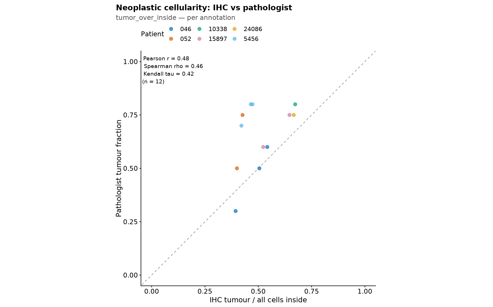
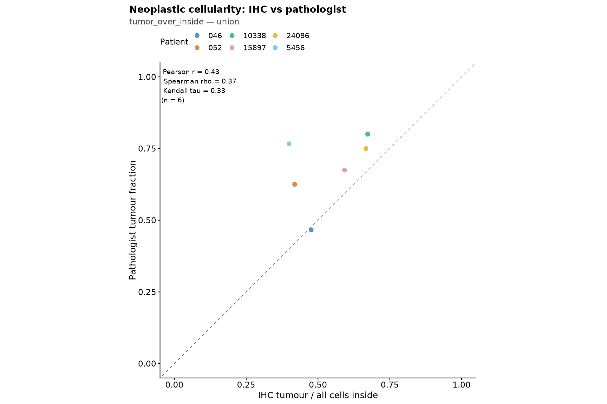
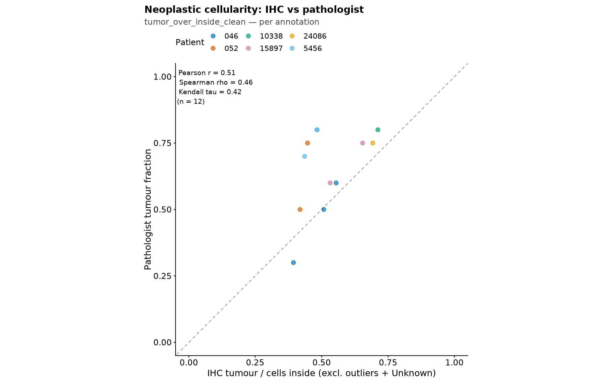
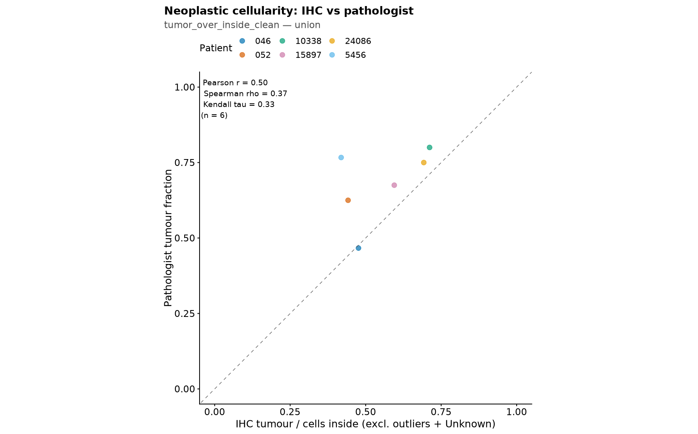
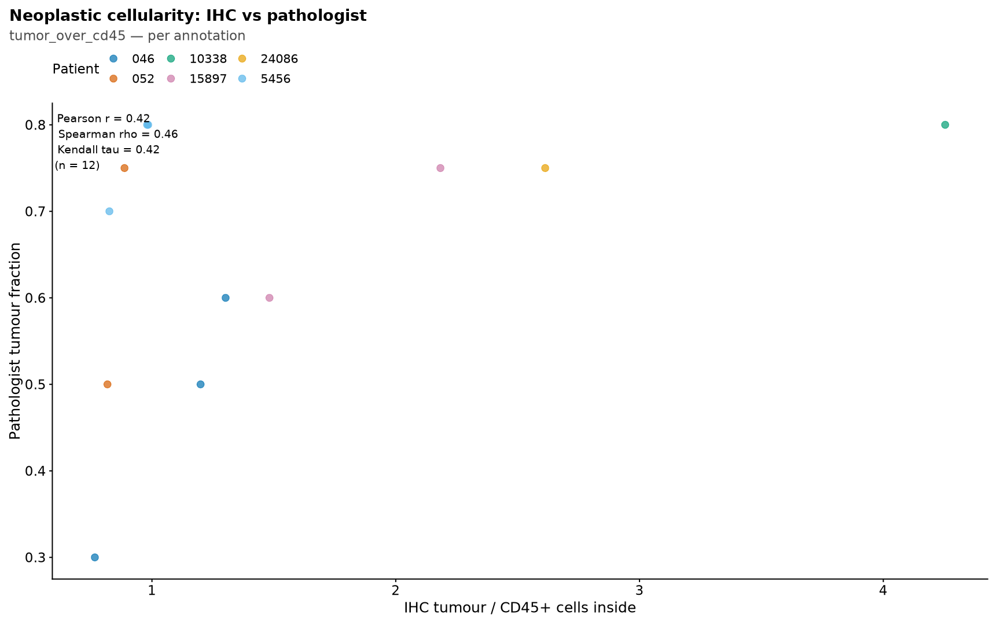
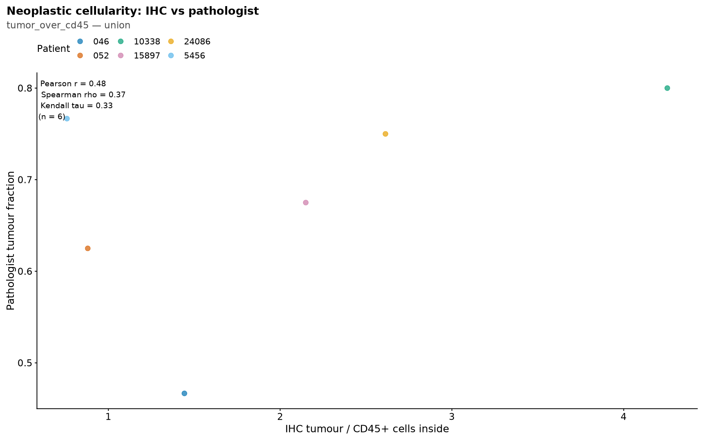
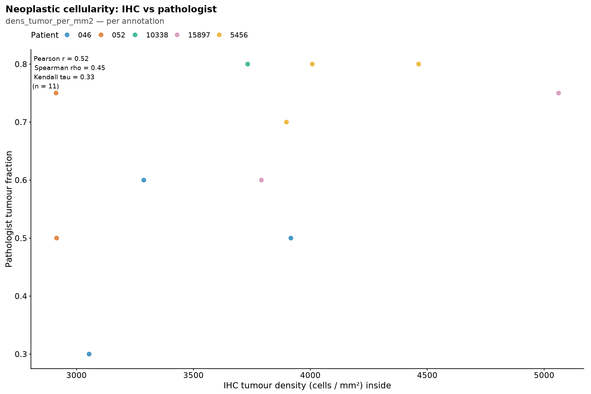
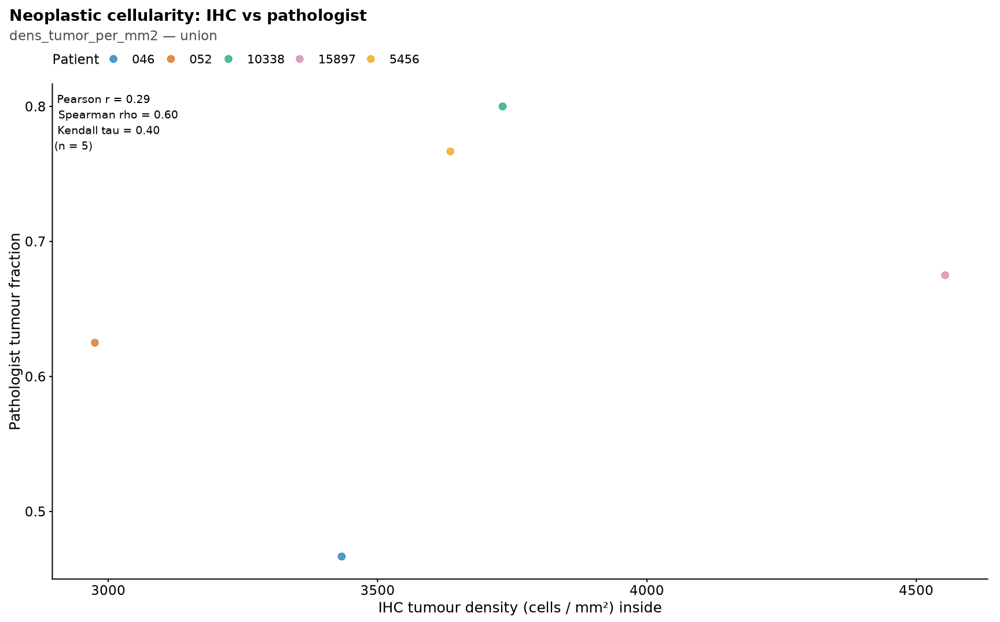
The concordance panels above compare neoplastic cellularity at two
fixed levels: per annotation (one point per
ANNOTATION_k) and union (one point per
patient). The union level hides a choice, because a patient with several
annotations has several IHC values and several pathologist
values, and each side has to be collapsed to one number before they can
be paired. That collapse is not neutral.
The mismatch this section exists to expose. The union pair above collapses the two sides by different rules:
pathologist path_union = mean(ANNOTATION_k / 100) UNWEIGHTED mean
IHC ihc_tumor_union = tumour cells / all cells,
over the POOLED cells of every
annotation of that patient CELL-WEIGHTED meanFor a patient whose annotations differ in size these are different summaries of the same slide. Take two annotations, 40 000 cells at 80% tumour and 4 000 cells at 50%: the cell-weighted IHC value is 0.77 while the unweighted pathologist value is 0.65. That 0.12 gap is aggregation artefact, not IHC-vs-pathologist disagreement — and the existing union panels cannot tell the two apart.
So below, every IHC aggregator is paired against every pathologist aggregator:
IHC side (per patient)
pooled cells of every annotation pooled and deduped, ratio recomputed
(exactly what the union panels above use) cell-weighted
wmean_ann per-annotation fractions averaged, weights = that annotation's
cell count cell-weighted
mean_ann per-annotation fractions averaged, every annotation equal
median_ann median of the per-annotation fractions (only differs from mean_ann
at 3+ annotations)
pathologist side (per patient)
wmean_cells ANNOTATION_k scores averaged, weights = that annotation's IHC cell
count — the pathologist analogue of pooling cells cell-weighted
mean plain mean over the patient's annotations (used by the union panels)
median median over the annotations
max the highest-scoring annotation ("worst area governs")
min the lowest-scoring annotation (most conservative)The weight is always the denominator of the metric being aggregated:
n_inside for tumor_over_inside,
n_inside_clean for tumor_over_inside_clean.
Weighting a clean-set metric by the unclean count would over-weight
annotations whose cells were mostly discarded as outliers or
Unknown.
One consequence to watch in the tables: a patient whose IHC region is
labelled "csv" rather than an ANNOTATION_k
cannot be matched to a per-annotation pathologist score, so it
contributes no weight and drops out of the wmean_cells rows
while still appearing in the mean / median /
max / min ones. That is why n is
printed on every row of the grid — compare rows only at equal
n.
Only two of the twenty combinations weight both sides the
same way — (pooled, wmean_cells) and
(mean_ann, mean). Those are the pairs whose gap is
interpretable as genuine disagreement; everywhere else part of the gap
is the aggregation mismatch. They are shaded in the scatter grids and
boxed in the heatmap.
A built-in check. wmean_ann should
reproduce pooled almost exactly, since pooling cells
is cell-weighting them. The only thing separating those two
rows is the union’s dedup of cells falling inside two overlapping
annotations — so a visible gap between them is a measurement of
annotation overlap, not an aggregation error. Read
those two rows against each other before trusting anything else
here.
# Every IHC aggregator x every pathologist aggregator, for both tumour-fraction
# normalizations. $pairs = the per-patient points; $stats = paired_cor3 + bias per
# combination. `bias` = mean(IHC - pathologist): the systematic offset that the
# correlation coefficients are deliberately blind to (a method can correlate
# perfectly and still read 15 points high).
agg <- aggregation_grid(ihc_tumor_per_ann, ihc_tumor_union, path_long)
baseline <- per_annotation_baseline(ihc_tumor_per_ann, path_long)
agg$stats |>
transmute(metric, ihc = ihc_lab, pathologist = path_lab,
matched = if_else(matched, "yes", ""),
n, pearson = round(pearson, 2), spearman = round(spearman, 2),
kendall = round(kendall, 2), bias = round(bias, 3)) |>
knitr::kable(caption = paste(
"Aggregation grid, best Spearman first within each metric.",
"matched = both sides weighted the same way (the interpretable rows).",
"bias = mean(IHC - pathologist)."))| metric | ihc | pathologist | matched | n | pearson | spearman | kendall | bias |
|---|---|---|---|---|---|---|---|---|
| tumor_over_inside | cell-weighted mean of annotations | min of ANNOTATION_k | 6 | 0.69 | 0.89 | 0.73 | -0.064 | |
| tumor_over_inside | cell-weighted mean of annotations | mean of ANNOTATION_k | 6 | 0.59 | 0.77 | 0.60 | -0.136 | |
| tumor_over_inside | cell-weighted mean of annotations | cell-weighted mean of ANNOTATION_k | 6 | 0.63 | 0.77 | 0.60 | -0.128 | |
| tumor_over_inside | mean of annotations | min of ANNOTATION_k | 6 | 0.65 | 0.71 | 0.60 | -0.063 | |
| tumor_over_inside | median of annotations | min of ANNOTATION_k | 6 | 0.61 | 0.71 | 0.60 | -0.057 | |
| tumor_over_inside | cell-weighted mean of annotations | median of ANNOTATION_k | 6 | 0.53 | 0.70 | 0.55 | -0.147 | |
| tumor_over_inside | pooled cells (union) | min of ANNOTATION_k | 6 | 0.55 | 0.60 | 0.47 | -0.071 | |
| tumor_over_inside | mean of annotations | mean of ANNOTATION_k | yes | 6 | 0.53 | 0.54 | 0.47 | -0.135 |
| tumor_over_inside | mean of annotations | cell-weighted mean of ANNOTATION_k | 6 | 0.56 | 0.54 | 0.47 | -0.127 | |
| tumor_over_inside | median of annotations | mean of ANNOTATION_k | 6 | 0.49 | 0.54 | 0.47 | -0.129 | |
| tumor_over_inside | median of annotations | cell-weighted mean of ANNOTATION_k | 6 | 0.51 | 0.54 | 0.47 | -0.121 | |
| tumor_over_inside | cell-weighted mean of annotations | max of ANNOTATION_k | 6 | 0.37 | 0.49 | 0.39 | -0.197 | |
| tumor_over_inside | mean of annotations | median of ANNOTATION_k | 6 | 0.48 | 0.43 | 0.41 | -0.147 | |
| tumor_over_inside | median of annotations | median of ANNOTATION_k | 6 | 0.45 | 0.43 | 0.41 | -0.140 | |
| tumor_over_inside | pooled cells (union) | mean of ANNOTATION_k | 6 | 0.43 | 0.37 | 0.33 | -0.143 | |
| tumor_over_inside | pooled cells (union) | cell-weighted mean of ANNOTATION_k | yes | 6 | 0.47 | 0.37 | 0.33 | -0.135 |
| tumor_over_inside | pooled cells (union) | median of ANNOTATION_k | 6 | 0.36 | 0.23 | 0.28 | -0.154 | |
| tumor_over_inside | mean of annotations | max of ANNOTATION_k | 6 | 0.28 | 0.22 | 0.23 | -0.197 | |
| tumor_over_inside | median of annotations | max of ANNOTATION_k | 6 | 0.22 | 0.22 | 0.23 | -0.190 | |
| tumor_over_inside | pooled cells (union) | max of ANNOTATION_k | 6 | 0.20 | 0.06 | 0.08 | -0.204 | |
| tumor_over_inside_clean | cell-weighted mean of annotations | min of ANNOTATION_k | 6 | 0.73 | 0.89 | 0.73 | -0.045 | |
| tumor_over_inside_clean | cell-weighted mean of annotations | mean of ANNOTATION_k | 6 | 0.63 | 0.77 | 0.60 | -0.118 | |
| tumor_over_inside_clean | cell-weighted mean of annotations | cell-weighted mean of ANNOTATION_k | 6 | 0.66 | 0.77 | 0.60 | -0.109 | |
| tumor_over_inside_clean | mean of annotations | min of ANNOTATION_k | 6 | 0.68 | 0.71 | 0.60 | -0.045 | |
| tumor_over_inside_clean | median of annotations | min of ANNOTATION_k | 6 | 0.66 | 0.71 | 0.60 | -0.038 | |
| tumor_over_inside_clean | cell-weighted mean of annotations | median of ANNOTATION_k | 6 | 0.57 | 0.70 | 0.55 | -0.129 | |
| tumor_over_inside_clean | pooled cells (union) | min of ANNOTATION_k | 6 | 0.61 | 0.60 | 0.47 | -0.052 | |
| tumor_over_inside_clean | mean of annotations | mean of ANNOTATION_k | yes | 6 | 0.57 | 0.54 | 0.47 | -0.117 |
| tumor_over_inside_clean | mean of annotations | cell-weighted mean of ANNOTATION_k | 6 | 0.59 | 0.54 | 0.47 | -0.108 | |
| tumor_over_inside_clean | median of annotations | mean of ANNOTATION_k | 6 | 0.55 | 0.54 | 0.47 | -0.111 | |
| tumor_over_inside_clean | median of annotations | cell-weighted mean of ANNOTATION_k | 6 | 0.56 | 0.54 | 0.47 | -0.102 | |
| tumor_over_inside_clean | cell-weighted mean of annotations | max of ANNOTATION_k | 6 | 0.41 | 0.49 | 0.39 | -0.179 | |
| tumor_over_inside_clean | mean of annotations | median of ANNOTATION_k | 6 | 0.52 | 0.43 | 0.41 | -0.128 | |
| tumor_over_inside_clean | median of annotations | median of ANNOTATION_k | 6 | 0.50 | 0.43 | 0.41 | -0.122 | |
| tumor_over_inside_clean | pooled cells (union) | mean of ANNOTATION_k | 6 | 0.50 | 0.37 | 0.33 | -0.125 | |
| tumor_over_inside_clean | pooled cells (union) | cell-weighted mean of ANNOTATION_k | yes | 6 | 0.52 | 0.37 | 0.33 | -0.116 |
| tumor_over_inside_clean | pooled cells (union) | median of ANNOTATION_k | 6 | 0.43 | 0.23 | 0.28 | -0.136 | |
| tumor_over_inside_clean | mean of annotations | max of ANNOTATION_k | 6 | 0.32 | 0.22 | 0.23 | -0.178 | |
| tumor_over_inside_clean | median of annotations | max of ANNOTATION_k | 6 | 0.28 | 0.22 | 0.23 | -0.172 | |
| tumor_over_inside_clean | pooled cells (union) | max of ANNOTATION_k | 6 | 0.27 | 0.06 | 0.08 | -0.186 |
baseline |>
transmute(metric, n, pearson = round(pearson, 2), spearman = round(spearman, 2),
kendall = round(kendall, 2), bias = round(bias, 3)) |>
knitr::kable(caption = paste(
"PER-ANNOTATION baseline: no aggregation at all, one point per",
"(patient, annotation). The reference the aggregated rows above should be read",
"against — it neither gains aggregation's smoothing nor loses the",
"within-patient signal."))| metric | n | pearson | spearman | kendall | bias |
|---|---|---|---|---|---|
| tumor_over_inside | 12 | 0.48 | 0.46 | 0.42 | -0.143 |
| tumor_over_inside_clean | 12 | 0.51 | 0.46 | 0.42 | -0.128 |
Read the correlations with the n beside
them. This cohort gives a handful of patients, so a Spearman
rho here has a confidence interval spanning most of the range, and the
ranking of the twenty combinations is far less stable than the
numbers suggest. The point of the grid is not to pick the winner by rho
— that would be selecting on noise — but to see whether the
choice matters at all. A flat grid means the conclusion is
robust to the aggregation; a grid with a large spread means any single
reported correlation is partly an artefact of the collapse rule.
# Reading a ROW shows how much the pathologist aggregator matters; a COLUMN, how much
# the IHC one does. Flat = the choice is immaterial for this cohort (the hoped-for
# outcome). Boxed cells are the matched-weighting pairs.
plot_aggregation_heatmap(agg$stats, "spearman")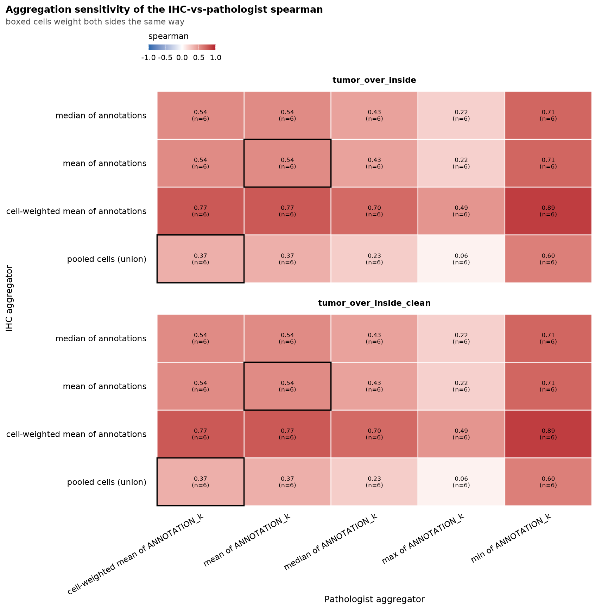
# tumour / all cells inside. Dashed line is x = y; vertical distance from it is the
# disagreement. Shaded panels weight both sides the same way.
plot_aggregation_grid(agg$pairs, "tumor_over_inside")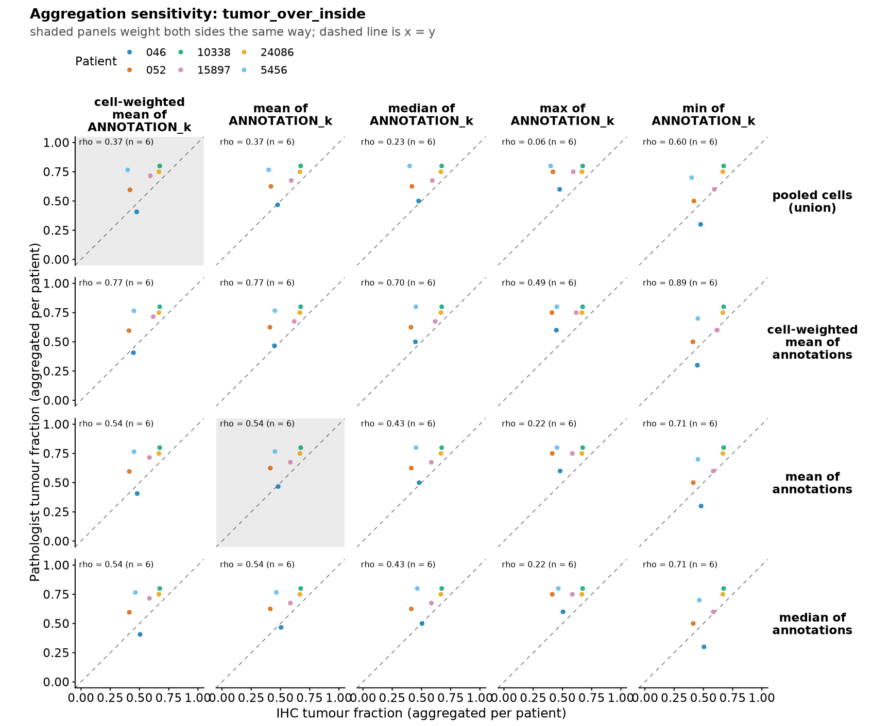
# tumour / cells inside, with FlowPath Outlier == TRUE and Unknown-phenotype cells
# removed from both numerator and denominator.
plot_aggregation_grid(agg$pairs, "tumor_over_inside_clean")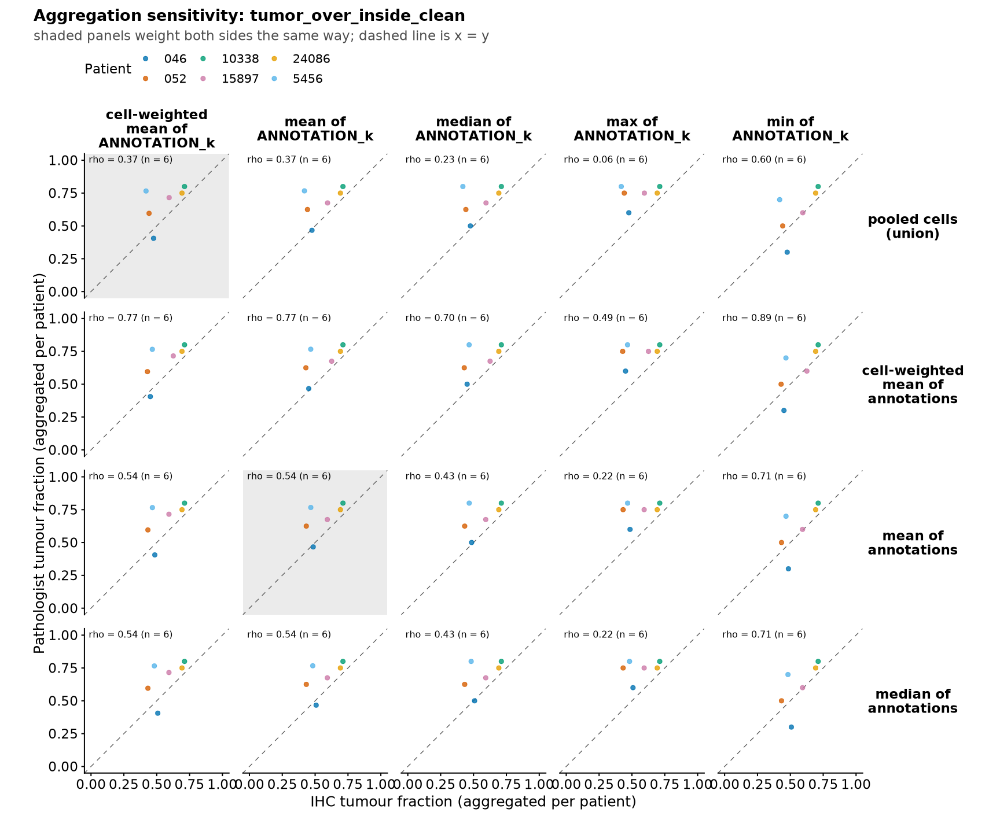
For method validation, prefer the per-annotation level over any aggregation. The pathologist reports one score per annotation, so the annotation — not the patient — is the natural unit at which the two methods can be compared like for like. It also uses every observation instead of averaging most of them away, which matters at this sample size. Aggregation is a compromise made necessary by the clinical joins (survival, response, blood counts), which are per patient.
When a patient-level number is required, use a matched pair. Reporting a cell-weighted IHC value against an unweighted pathologist value — what the union panels currently do — mixes a real effect with an artefact. Of the two matched options:
(mean_ann, mean) — treats each annotation as one
observation on both sides. Preferred as the primary: it mirrors how the
pathologist’s own numbers are produced (a per-region score, not a cell
census), and one very large annotation cannot dominate the patient’s
value.(pooled, wmean_cells) — treats the patient’s tissue as
a single specimen and asks what fraction of its cells are neoplastic.
Report alongside as the sensitivity analysis. It is the more natural
quantity if the annotations are arbitrary subdivisions of one tumour
rather than distinct regions.If those two disagree materially, the disagreement is itself the finding: it means the patient’s annotations are heterogeneous in both size and tumour content, and no single patient-level number represents that slide well.
Per patient, over the union inside cells:
cd45_over_inside = n_cd45_inside / n_inside (all CD45+ cells)
frac_<lineage> = n_<lineage> / n_inside (lineage in CD8T, CD4T, Treg, NK)
cd3cd45_over_inside = n_cd3cd45_inside / n_inside (marker CD3+CD45+ T cells)
gzmb_nk_over_inside = n_gzmb_nk_inside / n_inside (GZMB+ NK cells)cd3cd45 (CD45+ AND CD3+) and gzmb_nk (NK
lineage AND GZMB+) are marker-gated subsets — defined
by <marker>_sign, not the phenotype label — so they
sit alongside the phenotype lineages as extra readouts of overall immune
(CD45+), T-cell (CD3+CD45+) and cytotoxic-NK (GZMB+ NK) content.
Clinical references: HOT score (continuous) and
Immuno-phenotype (categorical), joined on
slide_key(ID PATIENT).
clin <- clinical_data |>
mutate(patient_id = slide_key(`ID PATIENT`)) |>
select(patient_id,
hot_score = any_of("HOT score"),
immuno_phe = any_of("Immuno-phenotype"))
infiltrate <- ihc_tumor_union |>
select(patient_id, cd45_over_inside, frac_CD8T, frac_CD4T, frac_Treg, frac_NK,
cd3cd45_over_inside, gzmb_nk_over_inside) |>
inner_join(clin, by = "patient_id")
cat("patients with IHC infiltrate + clinical immune phenotype:", nrow(infiltrate), "\n")patients with IHC infiltrate + clinical immune phenotype: 6 Statistic: Spearman correlation between cd45_over_inside
and the numeric HOT score.
if ("hot_score" %in% names(infiltrate) &&
sum(is.finite(suppressWarnings(as.numeric(infiltrate$hot_score)))) > 2) {
df <- infiltrate |> mutate(hot_score = suppressWarnings(as.numeric(hot_score)))
st <- paired_spearman(df$cd45_over_inside, df$hot_score)
ggplot(df, aes(cd45_over_inside, hot_score)) +
geom_point(alpha = 0.7, size = 2) +
geom_smooth(method = "lm", se = FALSE, colour = FIT_LINE, formula = y ~ x) +
annotate("text", x = -Inf, y = Inf, hjust = -0.1, vjust = 1.5,
label = sprintf("Spearman rho = %.2f (p = %.3g, n = %d)",
st$rho, st$p, st$n)) +
labs(title = "Immune infiltrate vs clinical HOT score",
x = "IHC CD45+ fraction inside tumour region", y = "clinical HOT score")
}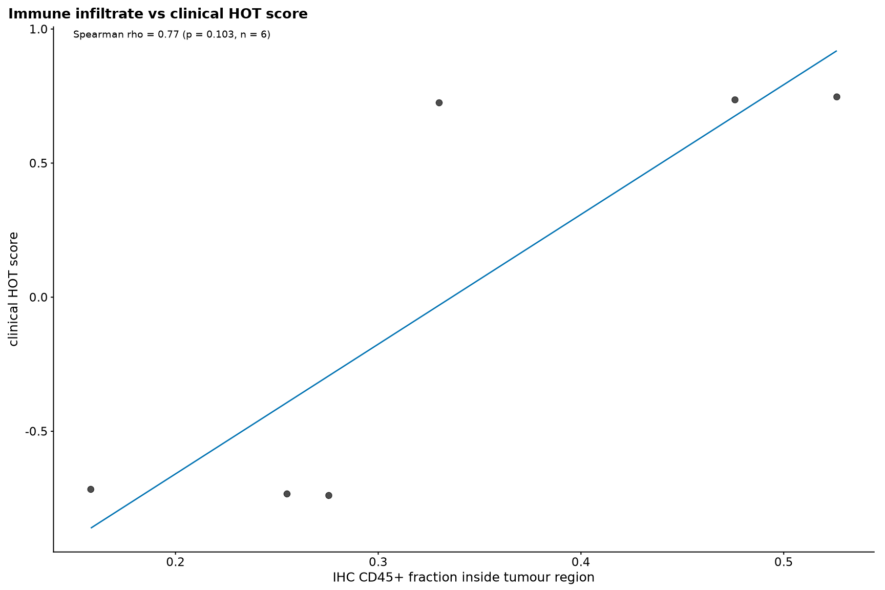
Grouped by Immuno-phenotype (ordered cold ->
intermediate -> hot); each box is the distribution of the IHC
fraction within a phenotype group. Metrics now include the marker-gated
CD45+, CD3+CD45+ and GZMB+ NK readouts.
# The metrics carried into every immuno-phenotype comparison (all are 0..1
# fractions of the cells inside the tumour region, so the arcsin panel below can
# transform them all).
infiltrate_metrics <- c("cd45_over_inside", "cd3cd45_over_inside", "gzmb_nk_over_inside",
"frac_CD8T", "frac_CD4T", "frac_Treg", "frac_NK")
# One boxplot-by-phenotype figure; `transform` is applied to the fraction so the
# same code draws the raw and the arcsin-sqrt panels (see next chunk).
plot_infiltrate_phenotype <- function(infiltrate, ylab, transform = identity) {
if (!("immuno_phe" %in% names(infiltrate)) ||
dplyr::n_distinct(na.omit(infiltrate$immuno_phe)) <= 1) return(invisible())
df <- infiltrate |>
pivot_longer(all_of(infiltrate_metrics), names_to = "ihc_metric", values_to = "frac") |>
filter(!is.na(immuno_phe), is.finite(frac)) |>
mutate(immuno_phe = hotcold_order(immuno_phe), value = transform(frac)) |>
filter(is.finite(value))
ggplot(df, aes(immuno_phe, value, colour = immuno_phe)) +
geom_boxplot(outlier.shape = NA) +
geom_jitter(width = 0.2, alpha = 0.6) +
facet_wrap(~ ihc_metric, scales = "free_y") +
scale_colour_manual(values = hotcold_cols(levels(df$immuno_phe)),
name = "Immuno-phenotype") +
labs(title = "IHC infiltrate metrics by clinical immuno-phenotype",
x = NULL, y = ylab, colour = "Immuno-phenotype") +
theme(axis.text.x = element_text(angle = 30, hjust = 1))
}
plot_infiltrate_phenotype(infiltrate, "fraction inside tumour region")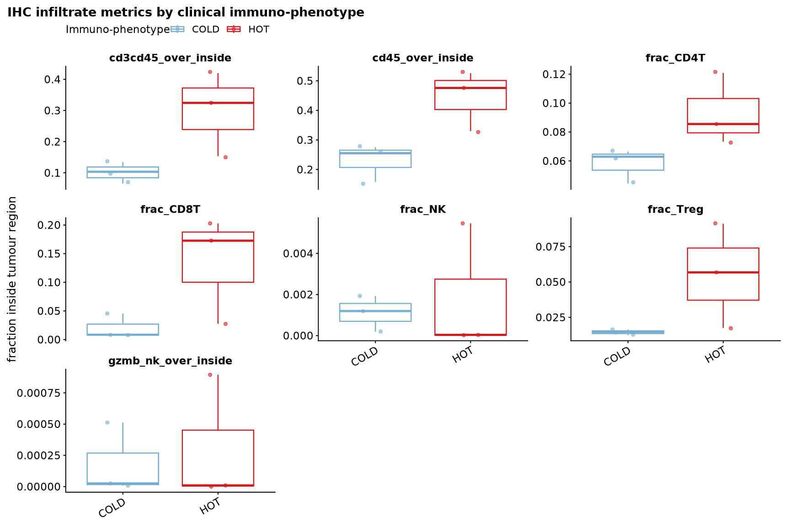
Arcsin-transformed. The same metrics under the
arcsine square-root transform (asin(sqrt(fraction))), which
stabilises the variance of a proportion by stretching the crowded 0/1
tails — read the boxes as the transformed scale, not raw fractions.
plot_infiltrate_phenotype(infiltrate, "arcsin(sqrt(fraction))", transform = asin_sqrt)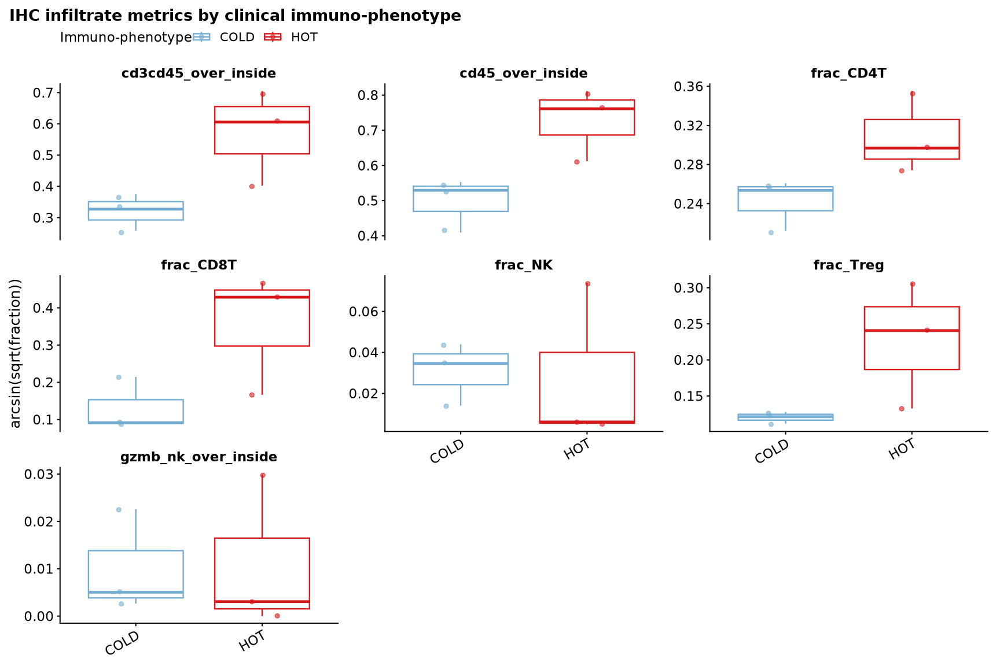
Same population counts, three denominators (each NA when
its denominator is 0). Alongside the phenotype lineages, the
marker-gated CD45+, CD3+ CD45+ and
GZMB+ NK populations are included:
frac_inside = n_<population> / n_inside (of all cells inside)
frac_tumor = n_<population> / n_tumor_inside (of tumour cells inside)
frac_cd45 = n_<population> / n_cd45_inside (of CD45+ cells inside)
populations = CD8T, CD4T, Treg, NK, Immune_other (phenotype lineages)
+ CD45+, CD3+ CD45+, GZMB+ NK (marker-gated subsets)Note frac_cd45 for the CD45+ population is 1 by
construction (a self-normalisation check), and marker-gated subsets are
shown under all three denominators for consistency with the
lineages.
# Marker-gated populations to add to the phenotype lineages (label -> count column
# from region_ratios). CD45+ = all immune; CD3+CD45+ = marker T cells; GZMB+ NK.
comp_markers <- c("CD45+" = "n_cd45_inside",
"CD3+ CD45+" = "n_cd3cd45_inside",
"GZMB+ NK" = "n_gzmb_nk_inside")
# One composition figure (population x denominator); `transform` applied to the
# fraction so the same code draws the raw and the arcsin-sqrt panels.
plot_composition <- function(region_metrics, ylab, caption, transform = identity) {
comp <- region_composition(region_metrics, markers = comp_markers) |>
pivot_longer(c(frac_inside, frac_tumor, frac_cd45),
names_to = "normalization", values_to = "frac") |>
mutate(normalization = factor(
c(frac_inside = "of all cells", frac_tumor = "of tumour cells",
frac_cd45 = "of CD45+ cells")[normalization],
levels = c("of all cells", "of tumour cells", "of CD45+ cells")),
value = transform(frac)) |>
filter(is.finite(value))
if (nrow(comp) == 0) return(invisible())
ggplot(comp, aes(lineage, value, fill = lineage)) +
geom_boxplot(outlier.shape = NA, colour = "grey30") +
geom_jitter(width = .15, alpha = .5, size = 1) +
facet_wrap(~ normalization, scales = "free_y") +
scale_fill_manual(values = oi, guide = "none") +
labs(title = "IHC immune composition inside the tumour region",
x = NULL, y = ylab, caption = caption) +
theme(axis.text.x = element_text(angle = 30, hjust = 1))
}
plot_composition(ihc_tumor_union, "fraction",
"denominators: all cells / tumour cells / CD45+ cells inside")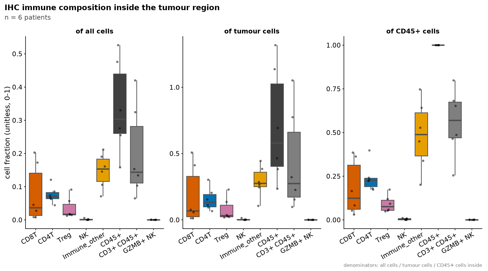
Arcsin-transformed. Same composition under the arcsine square-root transform of each fraction.
plot_composition(ihc_tumor_union, "arcsin(sqrt(fraction))",
"arcsin-sqrt of: all cells / tumour cells / CD45+ cells inside",
transform = asin_sqrt)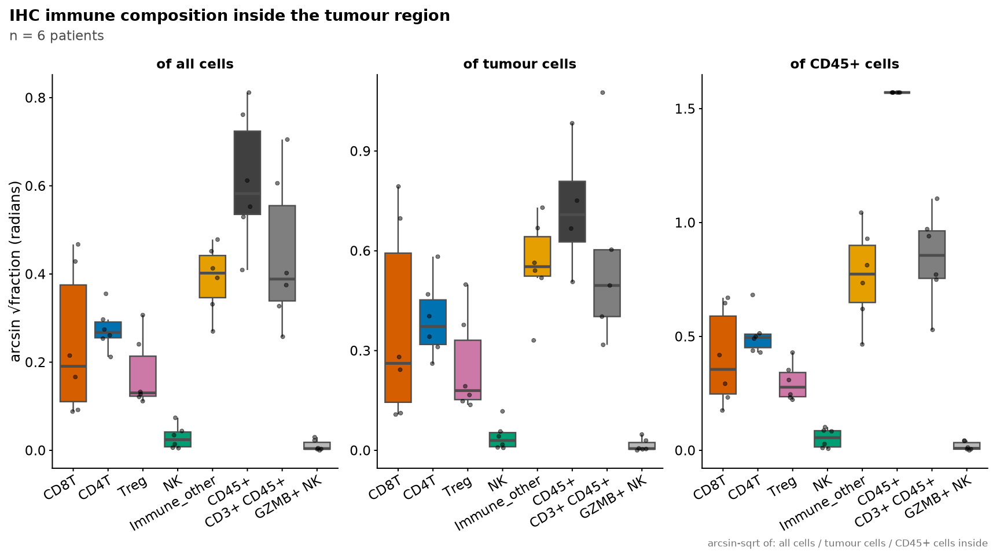
These use every imaged cell of every patient (ihc_data,
the de-duplicated union of the region files, no annotation
boundary).
Per patient p, over that patient’s cells in scope:
lineage fraction: frac(p, lineage) = (cells of p with that lineage) / (all cells of p)
[ihc_lineage_fraction]
marker pos-fraction: <marker>_posfrac(p) =
(cells of p positive for <marker>) / (all in-scope cells of p)
[ihc_marker_fraction; a cell no gate
evaluated counts as not-positive]ihc_lin <- ihc_lineage_fraction(mem$cells) |>
filter(lineage %in% comparable_lineages) |>
select(patient_id, lineage, frac) |>
pivot_wider(names_from = lineage, values_from = frac, values_fill = 0)
ihc_mk <- ihc_marker_fraction(mem$cells) |>
select(patient_id, any_of(c("CD45_posfrac", "CD8_posfrac", "FOXP3_posfrac")))
ihc_immune <- full_join(ihc_lin, ihc_mk, by = "patient_id")
clin_full <- clinical_data |>
mutate(patient_id = slide_key(`ID PATIENT`))
ihc_clin <- ihc_immune |> inner_join(clin_full, by = "patient_id")
cat("patients with IHC immune metrics + a clinical row:", nrow(ihc_clin), "\n")patients with IHC immune metrics + a clinical row: 6 # ihc_immune_score = CD45_posfrac if present, else the CD8T lineage fraction.
score_col <- intersect(c("CD45_posfrac", "CD8T"), names(ihc_clin))[1]
ihc_clin$ihc_immune_score <- if (!is.na(score_col)) ihc_clin[[score_col]] else NA_real_NLR(p) = BASAL VALUE OF NEUTROPHILS / BASAL VALUE OF LYMPHOCYTEScompared against ihc_immune_score by Spearman
correlation (also for lymphocytes and PNI).
blood <- ihc_clin |>
transmute(
patient_id, ihc_immune_score,
lymphocytes = suppressWarnings(as.numeric(`BASAL VALUE OF LYMPHOCYTES`)),
neutrophils = suppressWarnings(as.numeric(`BASAL VALUE OF NEUTROPHILS`)),
pni = suppressWarnings(as.numeric(`PROGNOSTIC NUTRITIONAL INDEX`))
) |>
mutate(nlr = neutrophils / lymphocytes)
blood_long <- blood |>
pivot_longer(c(lymphocytes, nlr, pni), names_to = "blood_metric", values_to = "value") |>
filter(is.finite(ihc_immune_score), is.finite(value))
if (nrow(blood_long) > 2) {
labs_tbl <- blood_long |>
group_by(blood_metric) |>
group_modify(~ paired_spearman(.x$ihc_immune_score, .x$value)) |>
mutate(lab = sprintf("rho = %.2f (p = %.3g, n = %d)", rho, p, n))
ggplot(blood_long, aes(ihc_immune_score, value)) +
geom_point(alpha = 0.7, size = 2) +
geom_smooth(method = "lm", se = FALSE, colour = FIT_LINE, formula = y ~ x) +
geom_text(data = labs_tbl, aes(x = -Inf, y = Inf, label = lab),
hjust = -0.05, vjust = 1.4, inherit.aes = FALSE, size = 3) +
facet_wrap(~ blood_metric, scales = "free_y") +
labs(title = "IHC immune score vs peripheral-blood immunity",
x = "IHC immune score (CD45+ fraction)", y = NULL)
}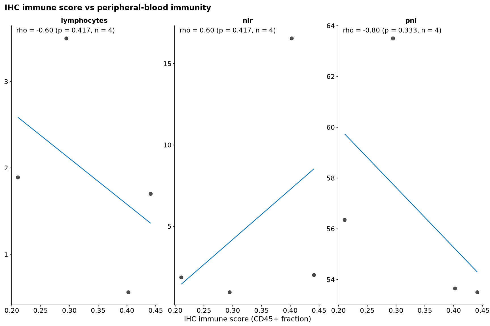
ihc_immune_score distribution grouped by
RESPONSE (factor ordered by ascending class value, 1 ->
3); no summary statistic beyond the group boxplots.
if ("RESPONSE" %in% names(ihc_clin)) {
df <- ihc_clin |>
filter(!is.na(RESPONSE), is.finite(ihc_immune_score))
df$RESPONSE <- factor(as.character(df$RESPONSE),
levels = as.character(sort(unique(as.numeric(as.character(df$RESPONSE))))))
if (dplyr::n_distinct(df$RESPONSE) > 1 && nrow(df) > 3) {
ggplot(df, aes(RESPONSE, ihc_immune_score, colour = RESPONSE)) +
geom_boxplot(outlier.shape = NA) +
geom_jitter(width = 0.2, alpha = 0.6) +
labs(title = "IHC immune score by induction response",
x = NULL, y = "IHC immune score (CD45+ fraction)") +
theme(axis.text.x = element_text(angle = 30, hjust = 1), legend.position = "none")
}
}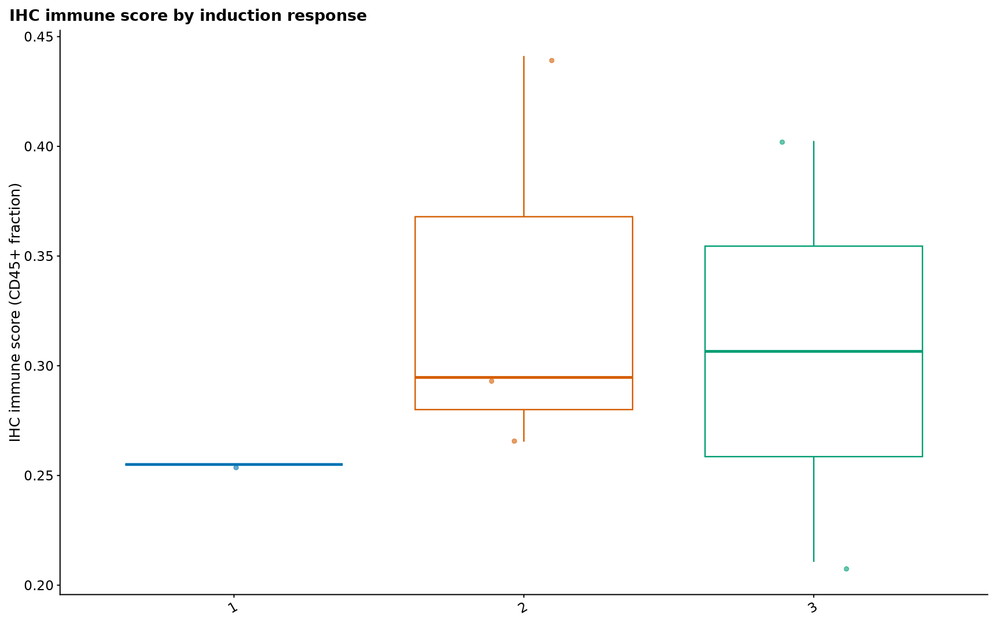
group(p) = "high" if ihc_immune_score(p) >= median, else "low" -> Kaplan-Meier
HR = exp( Cox coefficient of ihc_immune_score ) (univariable coxph)Event coding (coerce_event): yes/dead/relapse/1 -> 1;
no/alive/censored/0 -> 0. Time = OS/PFS
(months); event = FOLLOW UP (death) /
PERSISTENCE OR RELAPSE? (progression).
surv_cfg <- list(
OS = list(time = "OS", event = "FOLLOW UP"),
PFS = list(time = "PFS", event = "PERSISTENCE OR RELAPSE?")
)
coerce_event <- function(x) {
if (is.numeric(x)) return(as.integer(x > 0))
v <- tolower(trimws(as.character(x)))
dplyr::case_when(
v %in% c("1","yes","y","dead","death","deceased","event","relapse",
"progression","progressed","true") ~ 1L,
v %in% c("0","no","n","alive","ned","censored","false") ~ 0L,
TRUE ~ NA_integer_
)
}
run_survival <- function(cfg, label) {
if (!requireNamespace("survival", quietly = TRUE)) {
message("survival package not installed — skipping ", label); return(invisible())
}
if (!all(c(cfg$time, cfg$event) %in% names(ihc_clin))) {
message("missing ", cfg$time, "/", cfg$event, " — skipping ", label); return(invisible())
}
d <- ihc_clin |>
transmute(ihc_immune_score,
.time = suppressWarnings(as.numeric(.data[[cfg$time]])),
.event = coerce_event(.data[[cfg$event]])) |>
filter(is.finite(.time), !is.na(.event), is.finite(ihc_immune_score))
if (nrow(d) < 5 || dplyr::n_distinct(d$.event) < 2) {
message("too few informative rows for ", label, " (n = ", nrow(d), ")"); return(invisible())
}
d <- d |> mutate(immune_group = if_else(ihc_immune_score >= median(ihc_immune_score),
"IHC-immune high", "IHC-immune low"))
fit <- survival::survfit(survival::Surv(.time, .event) ~ immune_group, data = d)
cox <- survival::coxph(survival::Surv(.time, .event) ~ ihc_immune_score, data = d)
hr <- exp(stats::coef(cox))[1]; pcox <- summary(cox)$coefficients[1, "Pr(>|z|)"]
cat(sprintf("%s: Cox HR per unit IHC immune score = %.2f (p = %.3g, n = %d)\n",
label, hr, pcox, nrow(d)))
if (requireNamespace("survminer", quietly = TRUE)) {
# survminer defaults to its own theme_survminer (grey grid, large type), which
# would make these the only figures on the site off-style — force the house
# theme and the house categorical palette onto it.
print(survminer::ggsurvplot(fit, data = d, pval = TRUE, risk.table = TRUE,
title = paste(label, "by IHC immune score (median split)"),
legend.title = "", palette = unname(oi),
ggtheme = theme_paper())$plot)
} else {
plot(fit, col = c(oi[2], oi[1]), xlab = "time", ylab = "survival",
main = paste(label, "by IHC immune score"))
legend("topright", levels(factor(d$immune_group)),
col = c(oi[2], oi[1]), lty = 1, bty = "n")
}
}
invisible(purrr::iwalk(surv_cfg, ~ run_survival(.x, .y)))OS: Cox HR per unit IHC immune score = 0.41 (p = 0.92, n = 6)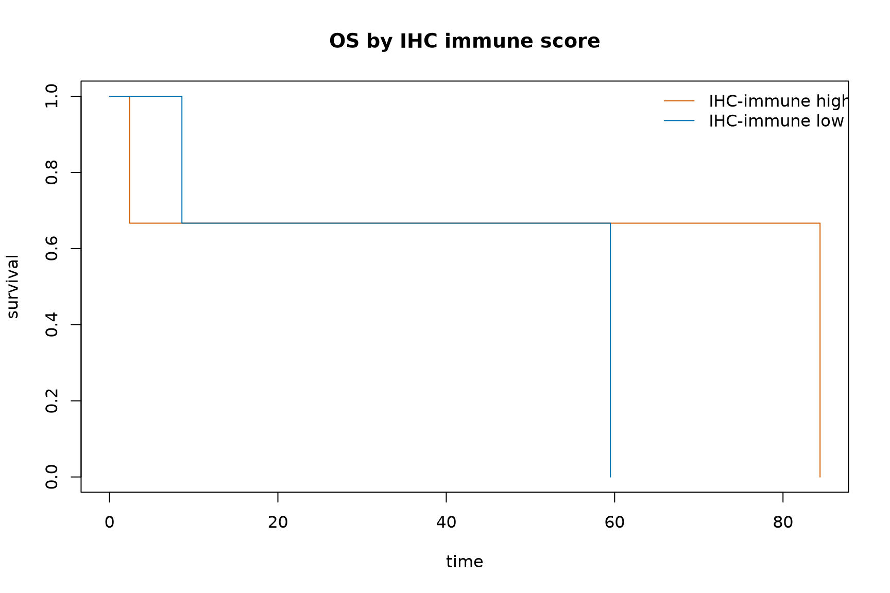
PFS: Cox HR per unit IHC immune score = 0.31 (p = 0.879, n = 6)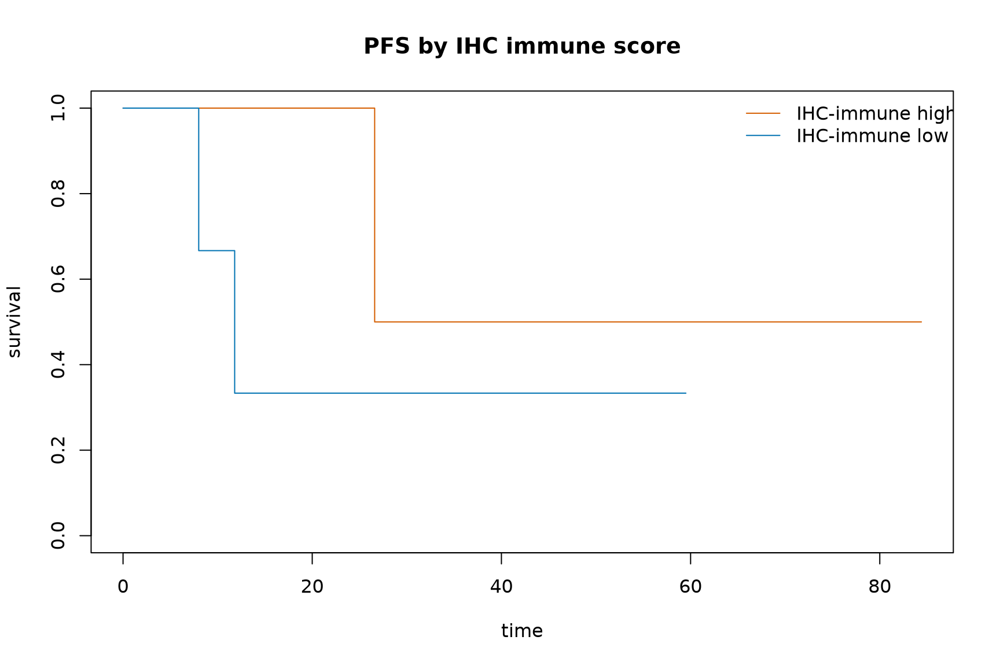
/0.325.whole_slide in the source column. That is the
one case with no area_mm2, hence no densities.marker_gated() (see
code/cell_tables.R) is what separates the two.n reported. Read associations as descriptive.
sessionInfo()R version 4.3.2 (2023-10-31)
Platform: x86_64-pc-linux-gnu (64-bit)
Running under: Rocky Linux 9.5 (Blue Onyx)
Matrix products: default
BLAS/LAPACK: FlexiBLAS OPENBLAS; LAPACK version 3.11.0
locale:
[1] LC_CTYPE=C.UTF-8 LC_NUMERIC=C LC_TIME=C.UTF-8
[4] LC_COLLATE=C.UTF-8 LC_MONETARY=C.UTF-8 LC_MESSAGES=C.UTF-8
[7] LC_PAPER=C.UTF-8 LC_NAME=C LC_ADDRESS=C
[10] LC_TELEPHONE=C LC_MEASUREMENT=C.UTF-8 LC_IDENTIFICATION=C
time zone: Europe/Rome
tzcode source: system (glibc)
attached base packages:
[1] stats4 stats graphics grDevices datasets utils methods
[8] base
other attached packages:
[1] data.table_1.18.4 fs_2.1.0
[3] readxl_1.5.0 DESeq2_1.42.1
[5] SummarizedExperiment_1.32.0 Biobase_2.62.0
[7] MatrixGenerics_1.14.0 matrixStats_1.5.0
[9] GenomicRanges_1.54.1 GenomeInfoDb_1.38.8
[11] IRanges_2.36.0 S4Vectors_0.40.2
[13] BiocGenerics_0.48.1 sf_1.1-1
[15] here_1.0.2 lubridate_1.9.5
[17] forcats_1.0.1 stringr_1.6.0
[19] dplyr_1.2.1 purrr_1.2.2
[21] readr_2.2.0 tidyr_1.3.2
[23] tibble_3.3.1 ggplot2_4.0.3
[25] tidyverse_2.0.0 workflowr_1.7.2
loaded via a namespace (and not attached):
[1] DBI_1.3.0 bitops_1.0-9 rlang_1.2.0
[4] magrittr_2.0.5 git2r_0.33.0 otel_0.2.0
[7] e1071_1.7-17 compiler_4.3.2 getPass_0.2-4
[10] mgcv_1.9-1 callr_3.7.6 vctrs_0.7.3
[13] pkgconfig_2.0.3 crayon_1.5.3 fastmap_1.2.0
[16] XVector_0.42.0 labeling_0.4.3 promises_1.5.0
[19] rmarkdown_2.31 tzdb_0.5.0 ps_1.9.3
[22] xfun_0.58 zlibbioc_1.48.2 cachem_1.1.0
[25] jsonlite_2.0.0 later_1.4.8 DelayedArray_0.28.0
[28] BiocParallel_1.36.0 parallel_4.3.2 R6_2.6.1
[31] bslib_0.9.0 stringi_1.8.7 RColorBrewer_1.1-3
[34] jquerylib_0.1.4 cellranger_1.1.0 Rcpp_1.1.1-1.1
[37] knitr_1.51 httpuv_1.6.12 Matrix_1.6-5
[40] splines_4.3.2 timechange_0.4.0 tidyselect_1.2.1
[43] rstudioapi_0.15.0 abind_1.4-8 yaml_2.3.12
[46] codetools_0.2-20 processx_3.9.0 lattice_0.22-9
[49] withr_3.0.3 S7_0.2.2 evaluate_1.0.5
[52] survival_3.8-6 units_1.0-1 proxy_0.4-29
[55] pillar_1.11.1 whisker_0.4.1 KernSmooth_2.23-26
[58] renv_1.2.3 generics_0.1.4 rprojroot_2.1.1
[61] RCurl_1.98-1.19 hms_1.1.4 scales_1.4.0
[64] class_7.3-23 glue_1.8.1 tools_4.3.2
[67] locfit_1.5-9.12 grid_4.3.2 nlme_3.1-163
[70] GenomeInfoDbData_1.2.11 cli_3.6.6 S4Arrays_1.2.1
[73] gtable_0.3.6 sass_0.4.10 digest_0.6.39
[76] classInt_0.4-11 SparseArray_1.2.4 farver_2.1.2
[79] htmltools_0.5.9 lifecycle_1.0.5 httr_1.4.7